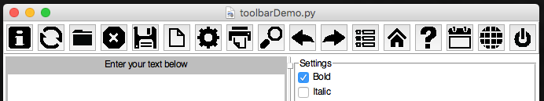
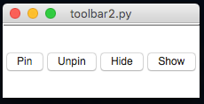
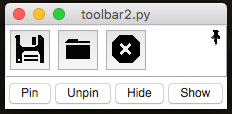
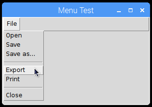
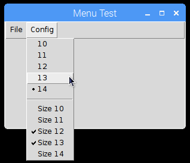
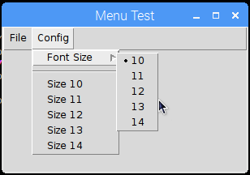
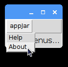
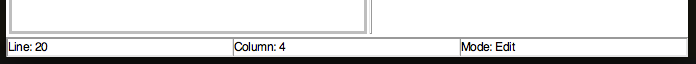
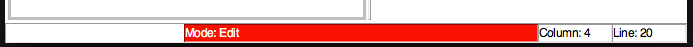

Toolbars, Menubars & Statusbars
Toolbars and Menubars are features common to most GUIs, you'll be used to seeing them along the top of apps, such as MS Word.
Statusbars are also useful features, they allow you to show information about what's going on in a GUI, usually along the bottom of the app.
Toolbar
Toolbars (sometimes known as ribbons) appear across the top of a GUI.
They offer a series of buttons to click, which can be used to change settings/functionality in a GUI.
NB. Icons don't work in python 2.7, due to an issue showing PNG images.

tools = ["ABOUT", "REFRESH", "OPEN", "CLOSE", "SAVE",
"NEW", "SETTINGS", "PRINT", "SEARCH", "UNDO",
"REDO", "PREFERENCES", "HOME", "HELP", "CALENDAR",
"WEB", "OFF"]
app.addToolbar(tools, tbFunc, findIcon=True)
Create Toolbars
.addToolbar(names, funcs, findIcon=False)
Will add a list of buttons along the top, in a toolbar. Each button will call the corresponding function.
If only one function is supplied, they will all call the same function, providing the button's name as a parameter.
A set of icons is available, iffindIconis set to True, then appJar will attempt to find an icon for each button.
Set Toolbars
.setToolbarPinned(pinned=True)
Will configure the toolbar to be pinnable
When the mouse is not over the toolbar it will minimise.

The toolbar will also gain an extra button (a pin) allowing the user to configure it to be pinned or not.

-
.setToolbarIcon(name, icon)
Will set an icon for the corresponding button in the toolbar.
Use the name of any of the icons in the resource folder (without the folder or file extension). -
.setToolbarImage(name, image)
Will set an image for the corresponding button in the toolbar. -
.setToolbarEnabled()&.setToolbarDisabled()
Will enable/disable all buttons on the toolbar. -
.setToolbarButtonEnabled(name)&.setToolbarButtonDisabled(name)
Will enable/disable the named toolbar button. -
.showToolbar()&.hideToolbar()
Will show/hide the toolbar.
Menubar
Adds a standard Menubar along the top of the GUI.
On Windows/Linux a menubar will only be shown, once the first menu has been added.
On Mac, a menubar is always present.
Menubars are made up of a series of menus, each containing a list of names.
These names can be menu-items, radio buttons, check boxes, separators, or sub-menus.
Create Menus
.addMenuList(menu, names, functions)
Will create a new menu, with the specified title, containing the list of names.
Pass a single function - all names will call that function, passing their name.
Or a list of functions (the same length as the names), each menu will call the corresponding function.
If a name is-, then a separator will be added to the menu.

fileMenus = ["Open", "Save", "Save as...", "-", "Export", "Print", "-", "Close"]
app.addMenuList("File", fileMenus, menuPress)
-
.createMenu(menu, tearable=False)
Will create a new, empty menu, to add menu-items to. -
.addMenuItem(menu, name, func=None, shortcut=None, underline=-1)
Add a menu-item to the named menu, with the specified function.
If the named menu does not exist, it will be automatically created.
If the name is-, then a separator will be added to the menu. -
.addMenuSeparator(menu)
Add a separator to the named menu. -
.addMenuCheckBox(menu, name, function=None, shortcut=None, underline=-1)
Add a check box, to the named menu, with the specified name. -
.addMenuRadioButton(menu, name, value, function=None, shortcut=None, underline=-1)
Add a radio button, to the named menu, grouped by name, with the specified value.

app.createMenu("Config")
for i in range(5):
app.addMenuRadioButton("Config", "font", "1" + str(i), menuPress)
app.addMenuSeparator("Config")
for i in range(5):
app.addMenuCheckBox("Config", "Size 1" + str(i), menuPress)
.addSubMenu(menu, subMenu)
Adds a sub-menu to the specified menu.
Then add menu-items to this menu (using its name).

app.createMenu("Config")
app.addSubMenu("Config", "Font Size")
for i in range(5):
app.addMenuRadioButton("Font Size", "font", "1" + str(i), menuPress)
.addMenu(menu, function, shortcut=None, underline=-1)
Adds a single menu, with no list of menu-items, that will call the specified function.
Set Menus
-
.setMenuCheckBox(menu, name)
Inverts the specified check box, in the named menu. -
.setMenuRadioButton(menu, name, value)
Selects the specified value, of the specified radio button, in the named menu. -
.setMenuImage(menu, name, image, align='text')
Will set the specified image for the specified menu-item. -
.setMenuIcon(menu, name, icon, align='text')
Will set the specified icon for the specified menu-item. -
.disableMenuItem(menu, name)&.enableMenuItem(menu, name)
Will enable/disable the specified menu name. -
.disableMenu(menu)&.enableMenu(menu)
Will disable/enable the specified menu. -
.disableMenubar()&.enableMenubar()
Will disable/enable all menus.
NB. currently doesn't disable entries in default Mac menus.
Get Menus
-
.getMenuCheckBox(menu, name)
Get the value of the specified check box, from the named menu.
Returns True or False. -
.getMenuRadioButton(menu, name)
Get the value of the specified radio button, from the named menu.
Returns the name of the checked radio button, for this group.
Extra Features:
-
shortcutThese are keyboard shortcuts to call a menu-item.
These should always be a combination of special keys and a regular key, separated by dashes.
e.g."Control-s"or"Control-Shift-z"
The following special keys are available:Control,Option,Alt,Shift,Command,Meta -
underlineIf set to an Integer, the corresponding character will be underlined. -
tearableIf this is set to True, it's possible to undock the menu.
Platform Specific/Custom Menus
It's possible to interact with menus that are specific to particular platforms, or prebuilt for specific purposes.
Simply use the menu names given below when adding menu-items to a menu.
-
Generic
-
Right-click Menu
Call.createRightClickMenu(menu, showInBar=False)to create an empty right-click menu
IfshowInBaris set toTrue, the Menu will also appear in the topLevel Menubar.
The right-click menu can be populated the same way as a regular menu.To link the right-click menu to a widget, call
.setXXXRightClick(widgetName, menu) -
Edit Menu -
EDITprovides a right-click, cut & paste menu automatically linked to all text, entry & option boxes.
Call.addMenuEdit(inMenuBar=False)to enable the Edit menu.
Set the parameter to True, to also show it in the menu bar.
This menu does its best to show the appropriate options, for all situations - but doesn't know when you can't redo an action.
-
-
Windows
- System Menu -
WIN_SYSaccessed by clicking the icon in the top left corner of the GUI.
- System Menu -
-
Mac - there are three default menus, each containing platform specific menus-item.
There are also a couple of menu-items the user can/should provide.- Application Menu -
MAC_APPafter the Apple logo (), usually called Python.
This menu is always present, and cannot be renamed - no matter how much I wish it could!
Call.addMenuPreferences(function)to enable the Preferences menu-item, within the Application Menu. - Window Menu -
MAC_WINcontains menu-items related to windows.
To access this menu, you must first call.addMenuWindow() - Help Menu -
MAC_HELPprovides a Search menu-item
To access this menu, you must first call.addMenuHelp(function), passing the function to call for the default Python Help menu-item.
- Application Menu -
-
Linux - by default, there is no menu, but it's easy enough to get access to the appJar menus:

app.addMenuItem("appJar", "Help", app.appJarHelp)
app.addMenuItem("appJar", "About", app.appJarAbout)
Statusbar
Adds a statusbar along the bottom of the GUI. This can be used for easy debugging, as info for the user, or to show current settings.

app.addStatusbar(fields=3)
app.setStatusbar("Line: 20", 0)
app.setStatusbar("Column: 4", 1)
app.setStatusbar("Mode: Edit", 2)

app.addToolbar(tools, tbFunc, True)
app.addStatusbar(fields=3, side="RIGHT")
# NOTE: 0 is now on the right
app.setStatusbarWidth(50, 2)
app.setStatusbarBg("red", 2)
app.setStatusbarFg("white", 2)
Create Statusbars
.addStatusbar(header="", fields=1, side=None)
This turns the statusbar on, and if a header is supplied, will prepend the header before every status.
Iffieldsis populated, it's possible to have multiple status boxes, each addressable by a number.
sidecan be set as LEFT/RIGHT to make the fields appear from the left or right side, otherwise they will stretch equally.
Set Statusbars
-
.setStatusbar(text, field=0)
This updates the contents of the statusbar.
Again, if a header was set when adding the statusbar, it will be prepended to the message.
If multiple fields were created, a position should be supplied to populate (starting from 0). -
.clearStatusbar(field=0)
Clear anything displayed in the statusbar, along with any header that might be set.
If multiple fields were created, specify which one, otherwise all fields will be cleared. -
.setStatusbarWidth(width, field=0)
Set the width of the specified statusbar field (in characters). -
.setStatusbarHeader(header)
Set a new header value to be used from the next time the statusbar text is updated.